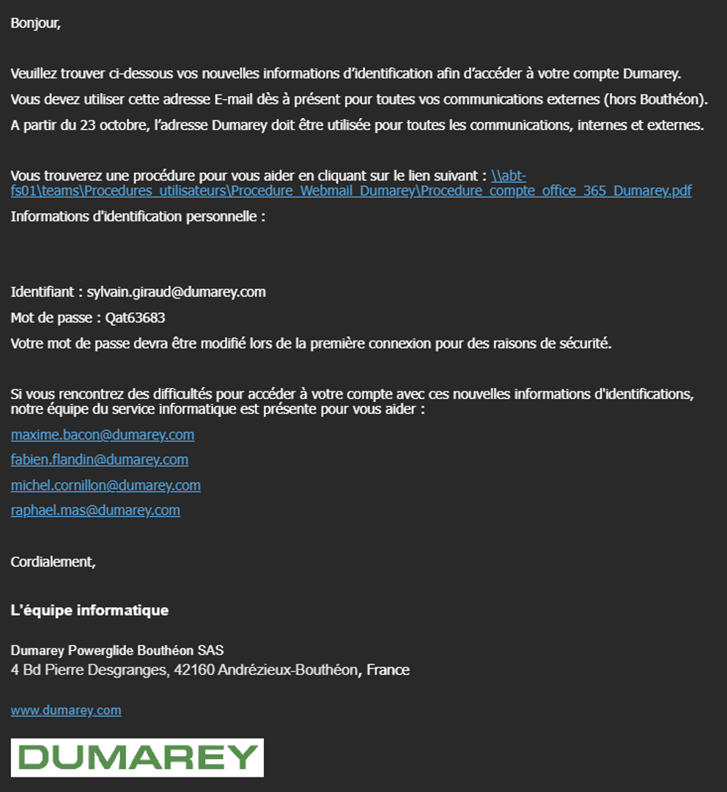
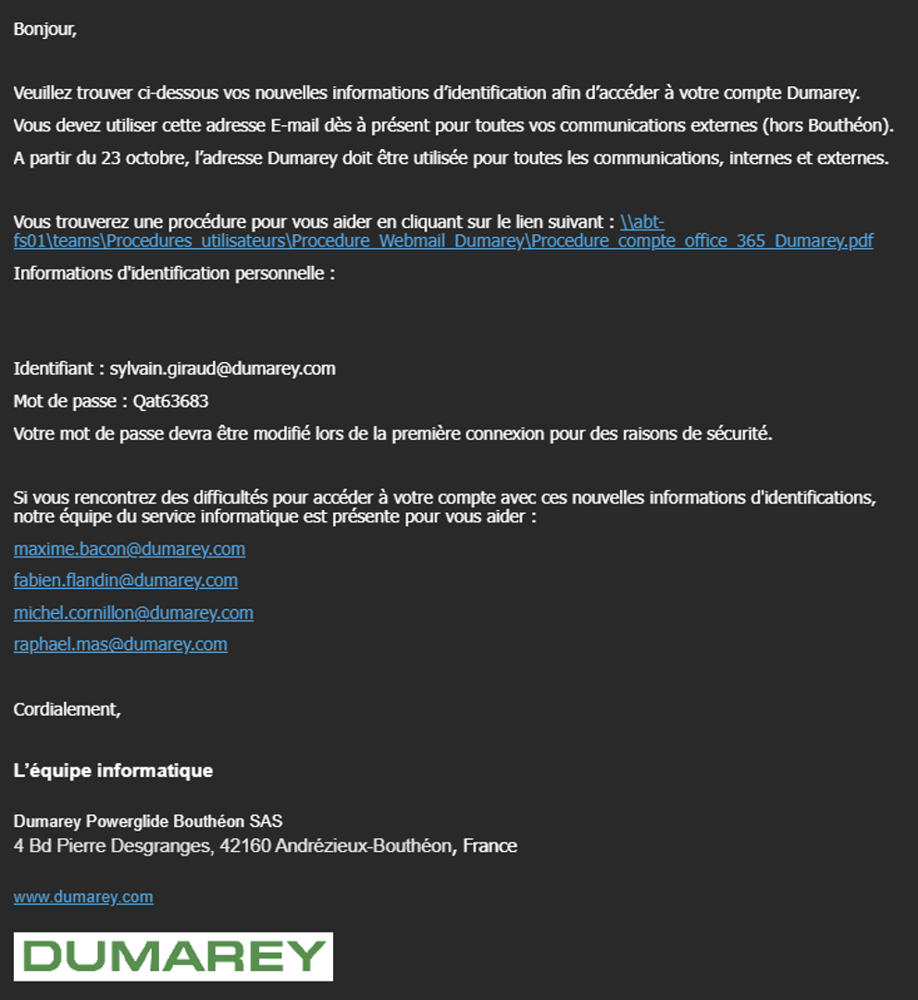

Wordpress Ubuntu


WordPress est utilisé pour créer une grande variété de sites web,
tels que des blogs, des sites d'entreprise, des portfolios, des boutiques en ligne, des forums, etc.
Par exemple, une petite entreprise peut utiliser WordPress pour créer un site web professionnel et facile à gérer, tandis qu'un blogueur
peut l'utiliser pour publier du contenu et interagir avec sa communauté.
En résumé, WordPress est une plateforme polyvalente qui convient à de nombreux types de projets web.
Le choix entre Nginx et Apache pour un serveur WordPress sous Ubuntu dépend souvent des besoins spécifiques de votre projet et de vos
préférences personnelles.
Cependant, voici quelques raisons pour lesquelles certains utilisateurs préfèrent Nginx à Apache pour exécuter WordPress :
Performance : Nginx est réputé pour sa légèreté et son efficacité en termes de consommation de ressources par rapport à Apache.
Il peut gérer efficacement un grand nombre de connexions simultanées avec moins de ressources système, ce qui peut améliorer les
performances globales de votre site WordPress, en particulier lors de pics de trafic.
Traitement des requêtes concurrentes : Nginx est souvent considéré comme plus performant qu'Apache pour gérer les requêtes concurrentes.
Il utilise une architecture de traitement asynchrone, ce qui lui permet de gérer efficacement de nombreuses connexions simultanées sans
consommer beaucoup de ressources.
Configuration : La syntaxe de configuration de Nginx est considérée comme plus simple et plus lisible que celle d'Apache, ce qui facilite
la configuration et la gestion du serveur pour les utilisateurs.
Flexibilité : Nginx est extrêmement flexible et peut être utilisé de diverses manières pour servir des sites Web statiques, dynamiques et
même des applications web complexes. Il est souvent utilisé comme serveur proxy inverse pour gérer le trafic et améliorer la sécurité.
Sécurité : Nginx est souvent considéré comme plus sécurisé qu'Apache en raison de sa conception légère et de son modèle de traitement des
requêtes. Il est également souvent mis à jour avec des correctifs de sécurité réguliers.
Cependant, Apache reste un choix très populaire et est également bien pris en charge par WordPress. La meilleure option pour votre installation
dépendra de divers facteurs, y compris votre niveau de familiarité avec chaque serveur, les exigences de performance de votre site, et d'autres
considérations spécifiques à votre projet. Il est recommandé de faire des tests et des évaluations approfondis avant de prendre une décision.
Le publipostage, également connu sous le nom de mailing en masse, est une technique de communication marketing qui consiste à envoyer des
documents personnalisés à un grand nombre de destinataires.
Ces documents peuvent être :
- Des lettres
- Des e-mails
- Des brochures
- Des cartes postales
L'objectif du publipostage est de fournir un message spécifique à chaque destinataire, en utilisant des données variables pour personnaliser
le contenu. Ces données variables peuvent inclure le nom du destinataire, son adresse, des informations sur ses achats précédents, ou toute autre
information pertinente.

1. Collecte des données :
Rassemblez les informations sur vos destinataires, telles que leurs noms, adresses, préférences, historique d'achat, etc.
2. Création du document modèle :
Concevez le document que vous allez envoyer, en laissant des espaces réservés pour les données variables qui seront personnalisées pour chaque
destinataire.
3. Personnalisation du document :
Utilisez un logiciel de publipostage pour insérer les données variables dans le document modèle, créant ainsi des versions uniques
pour chaque destinataire.
4. Préparation et envoi :
Préparez les documents personnalisés pour l'envoi, que ce soit par courrier postal ou électronique. Assurez-vous de respecter les
réglementations en matière de protection des données et les bonnes pratiques en matière de marketing.
Pour mon cas, J’ai dû réaliser environ 400 mails pour tous les employés de mon entreprise. Dans ce mail je leurs ai donné leur nouveau mot de passe
et adresse mail pour le nouveau compte Office.
Voici l’exemple d’un mail que j’ai envoyé : (caché le nom de la personne)
 

Mes deux outil de travail étaient Microsoft Word  et Microsoft Excel
et Microsoft Excel 
J'ai utilisé un tableau Excel et m'a servi comme base de données, il contenait des informations sur tous les utilisateurs :


Ainsi, en un clic j’ai pu envoyer 400 mail personnalisé. J’ai pu remplir une tâche qui m’a été demandé et qui devait prendre quelques jours à faire à la main en une demi-journée, le temps de me renseigner et d’effectuer des tests.